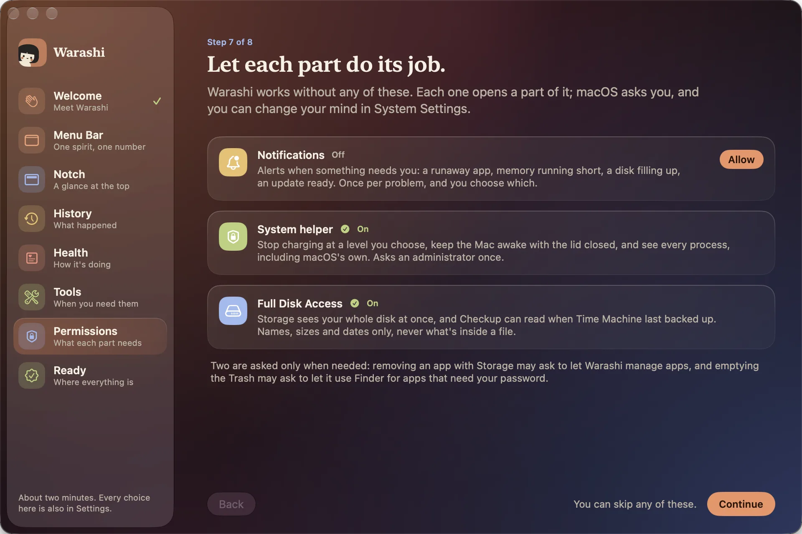
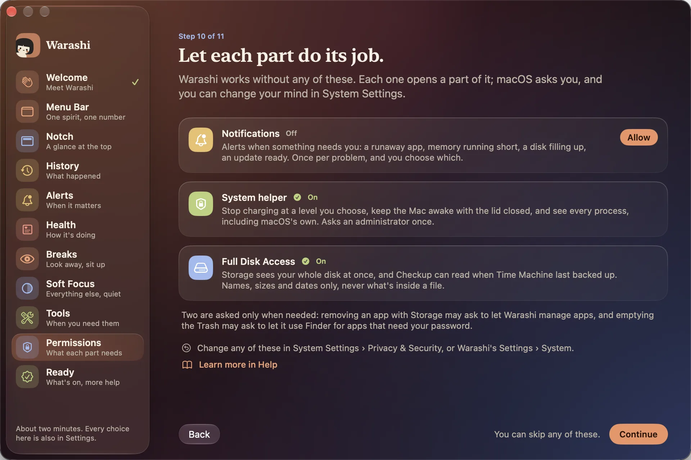
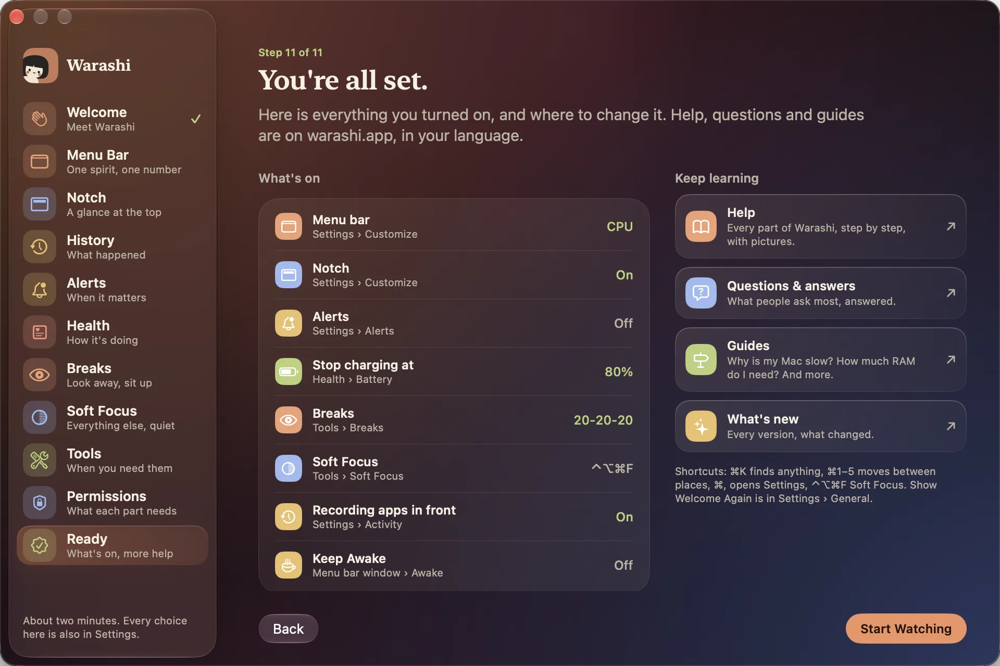

À la première ouverture de Warashi, une courte visite pratique vous fait faire le tour. La liste à gauche est la même carte que la fenêtre de Warashi ; cliquez sur une étape pour y aller. Chaque page montre la vraie chose, en direct, et vous laisse l’essayer : chaque interrupteur est le vrai réglage, et quand quelque chose fonctionne, une coche verte dit ce qui se passe désormais. Chaque page indique aussi où le modifier plus tard et propose En savoir plus dans l’Aide, qui ouvre la partie correspondante de cette Aide. Cela prend environ deux minutes, et tout peut être ignoré.
- Bienvenue
Ce qu’est Warashi, et quatre promesses : votre historique reste sur votre Mac, aucun compte ni rien à configurer d’abord, il ne demande que ce dont une fonction a besoin, et des statistiques d’utilisation anonymes aident à l’améliorer. Cliquez sur Faire le tour.

Page 1 : Voici Warashi. - Barre des menus
Choisissez le chiffre à côté de l’esprit et regardez votre vraie barre des menus changer. Afficher ce qui demande votre attention permet au chiffre de passer à un avertissement quand la mémoire manque ou que le Mac chauffe. Puis essayez : cliquez sur l’esprit dans la barre des menus, et la page confirme que la fenêtre s’est ouverte.

Page 2 : l’élément de la barre des menus, et un clic dessus. - Encoche
Essayez : posez le pointeur sur votre encoche (ou l’îlot sur un autre écran). La page remarque que le tableau de bord s’ouvre et dit ce que vous pouvez en faire. En dessous : les interrupteurs du coup d’œil, de l’îlot et des Comptes à rebours en direct, et un bouton pour inverser les deux chiffres.

Page 3 : l’encoche et l’îlot. - Historique
Une journée d’exemple dans le Journal de bord, et comment cliquer sur n’importe quel moment de l’Historique. Activez Enregistrer l’app au premier plan pour voir combien de temps vous utilisez chaque app ; la page confirme l’enregistrement et où votre temps apparaît. Seuls les changements d’app sont enregistrés, jamais de titres de fenêtres, de sites ni de frappes.

Page 4 : Historique, le Journal de bord et l’enregistrement d’activité (facultatif). - Alertes
Quatre alertes suggérées : une app qui utilise beaucoup le processeur, une mémoire qui grimpe vite, le disque de démarrage qui se remplit et une batterie qui chauffe. Activez-en une et macOS demande une fois d’autoriser les notifications. Une fois autorisé, Envoyer un test montre un exemple, et la page confirme que les alertes vous parviendront. Si les notifications sont coupées, elle indique où les activer.

Page 5 : Alertes. - État
La carte de limite de charge de la fenêtre de la barre des menus, en direct : activez Arrêter la charge à et la page confirme où la charge s’arrêtera. Puis comment accéder à Bilan, Pourquoi mon Mac est-il lent ? et Stockage.

Page 6 : État. - Pauses
Une miniature du vrai écran de pause. Activez les Pauses, choisissez un rythme (20-20-20, Pomodoro, 50 et 10 ou Travail profond), et activez ou non Tenez-vous droit. Essayer une pause en montre une vraie (Passer ou Échap la termine), et Montrer Tenez-vous droit montre le rappel de posture qui monte au milieu de l’écran.

Page 7 : Pauses. - Flou d’arrière-plan
Un aperçu en direct du Flou d’arrière-plan. Essayez : appuyez sur ⌃⌥⌘F, et tout sauf la visite s’adoucit en un flou ; la page le confirme. Choisissez Ambiant ou Profond, et activez si vous voulez le geste du pointeur.

Page 8 : Flou d’arrière-plan. - Outils
Activez Rester éveillé pendant une heure pour essayer ; la page confirme que votre Mac reste éveillé et s’arrête tout seul. Puis les tests de débit, Nettoyer l’écran et le clavier, et ⌘K, qui trouve chaque outil par son nom. Voir Outils.

Page 9 : Outils. - Autorisations
Warashi fonctionne sans aucune d’elles ; chacune ouvre une partie de l’app. Chaque carte dit à quoi elle sert et si elle est Désactivé, Presque ou Activé, et la page remarque dès que vous activez quelque chose dans Réglages Système.
- Notifications : appuyez sur Autoriser et macOS demande une fois (déjà fait si vous avez activé une alerte). Nécessaire pour les alertes.
- Assistant système : appuyez sur Activer, puis activez Warashi dans Réglages Système › Général › Ouverture et extensions (un administrateur l’approuve une seule fois). Il permet à Warashi d’arrêter la charge à n’importe quel niveau, de garder le Mac éveillé écran rabattu, et de voir les processus de macOS.
- Accès complet au disque : appuyez sur Ouvrir Réglages Système et activez Warashi dans la liste, ou faites-y glisser son icône. Stockage voit alors tout votre disque d’un coup, et Bilan peut savoir quand Time Machine a fait sa dernière sauvegarde. Uniquement des noms, des tailles et des dates, jamais le contenu d’un fichier. Si macOS ne l’applique qu’après un redémarrage de Warashi, appuyez sur Rouvrir Warashi : la visite revient à cette page.
Chacune peut être ignorée. Deux ne sont demandées qu’au besoin : pour supprimer une app depuis Stockage, et pour vider de la corbeille des éléments qui exigent votre mot de passe.

Page 10 : Autorisations (toutes facultatives). - Prêt
Ce qui est activé : tout ce que vous avez réglé pendant la visite, lu en direct, avec où le modifier. Pour aller plus loin : Aide, Questions et réponses, Guides et Nouveautés, ouverts sur warashi.app dans votre langue. Les raccourcis utiles, Ouvrir Warashi à l’ouverture de session pour un historique sans trous, puis Commencer la surveillance.

Page 11 : ce qui est activé, et où en savoir plus.
Si quelque chose ne va pas
- Cliquer sur l’esprit ou pointer l’encoche n’est pas coché : vérifiez que l’élément de Warashi est visible dans la barre des menus et que le coup d’œil près de l’encoche est activé.
- Appuyer sur ⌃⌥⌘F ne fait rien : une autre app utilise peut-être le même raccourci. Utilisez plutôt Activer sur la page.
- Envoyer un test n’affiche rien : autorisez Warashi dans Réglages Système › Notifications.
- L’Assistant système indique Presque : ouvrez Réglages Système › Général › Ouverture et extensions et activez Warashi sous Autoriser en arrière-plan.
- La visite n’est pas apparue : ouvrez Warashi depuis Applications, puis Réglages › Général › Revoir la bienvenue.
Plus d’infos dans Dépannage, ou écrivez à adam@warashi.app.